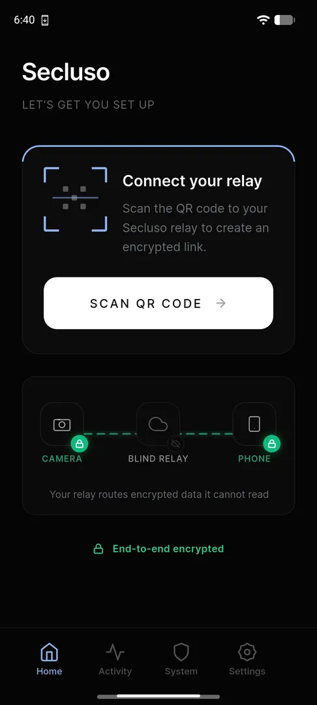
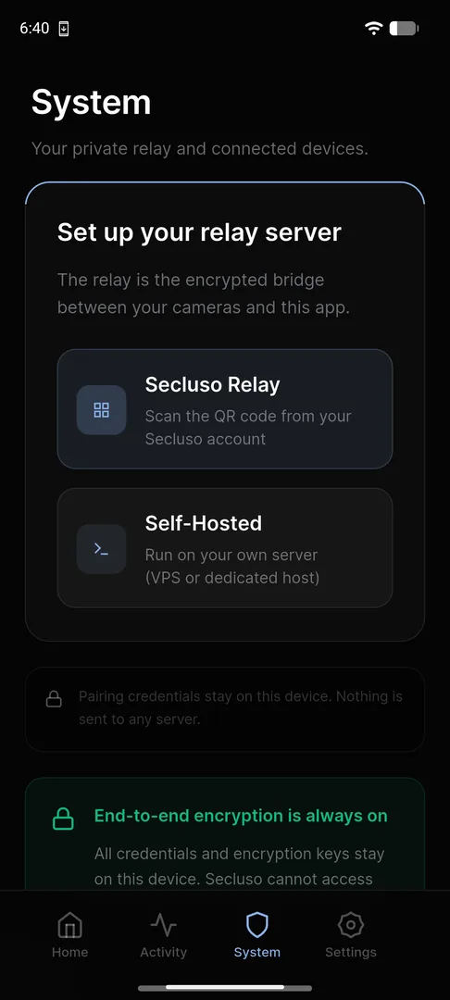
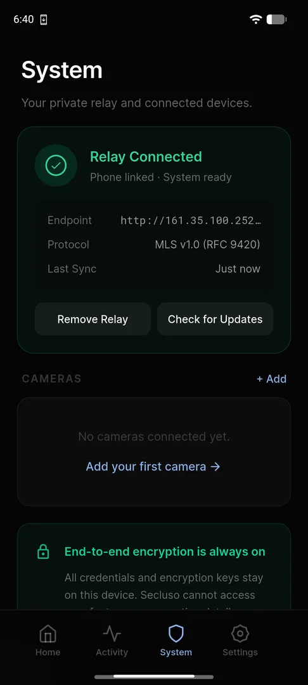

Adding a Relay¶
The relay forwards traffic between your cameras and your phone, so you can watch your camera from anywhere. It only ever handles encrypted blobs it cannot read.
Step 1: Start the connection¶
On the Home screen, tap Scan QR code under Connect your relay.

Step 2: Choose your relay¶
Open the System tab and pick how to run the relay:
- Secluso Relay: scan the QR code from your Secluso account or the QR code shipped to you with your Secluso camera.
- Self-Hosted: scan the QR code from the relay deployed in your own VPS or dedicated host.

Credentials stay on your device
Whichever option you choose, your credentials and encryption keys stay on your phone. Secluso cannot access your cameras.
Step 3: Confirm it's connected¶
After scanning, the System tab shows Relay Connected, with your phone linked and the endpoint, protocol, and last sync time listed.

Relay ready
With a green Relay Connected status, you can add a camera next. Use Check for Updates or Remove Relay from this screen at any time.